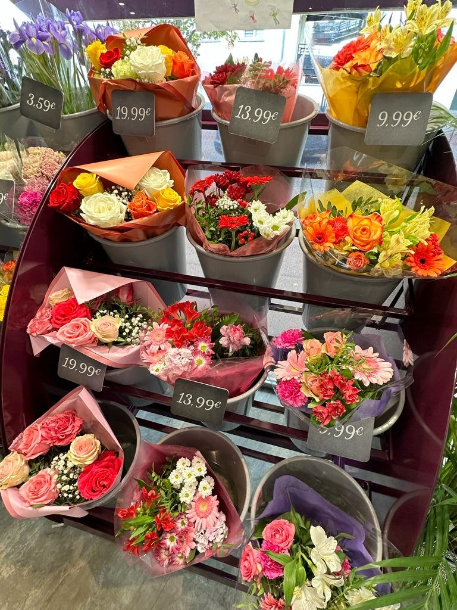
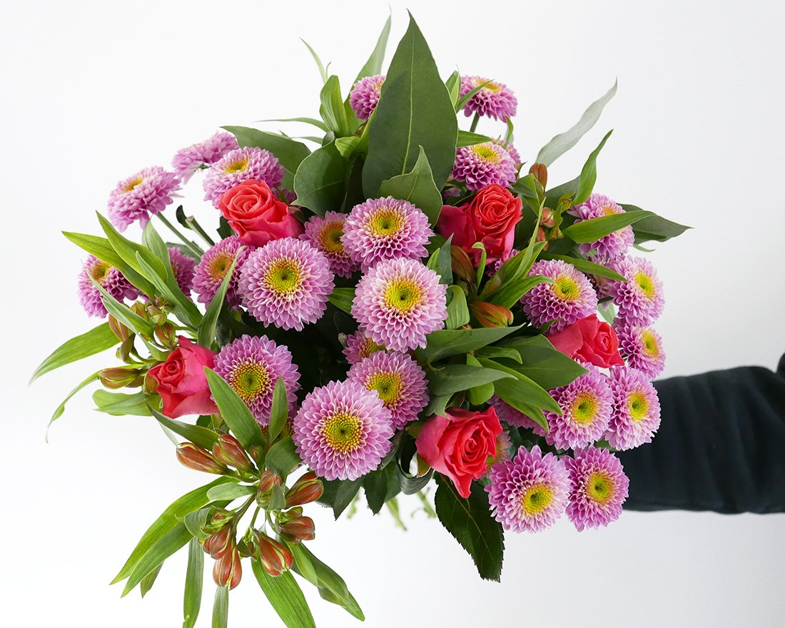
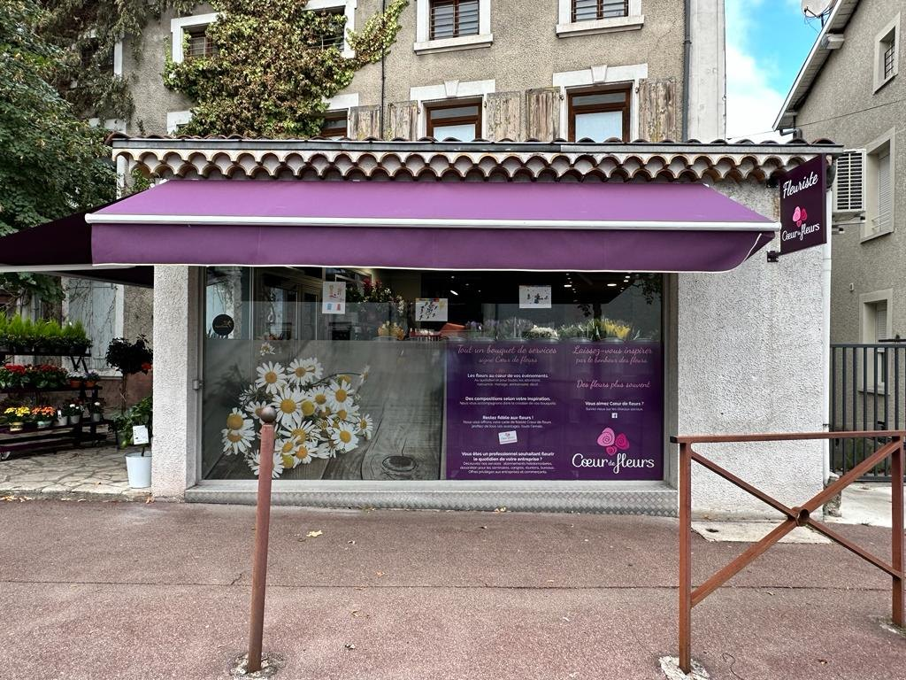
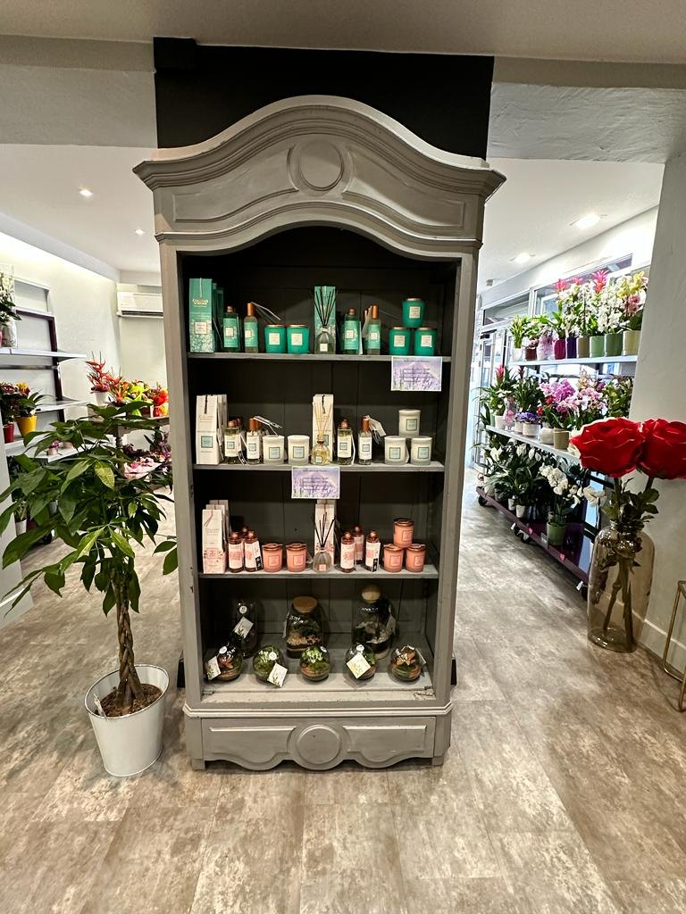
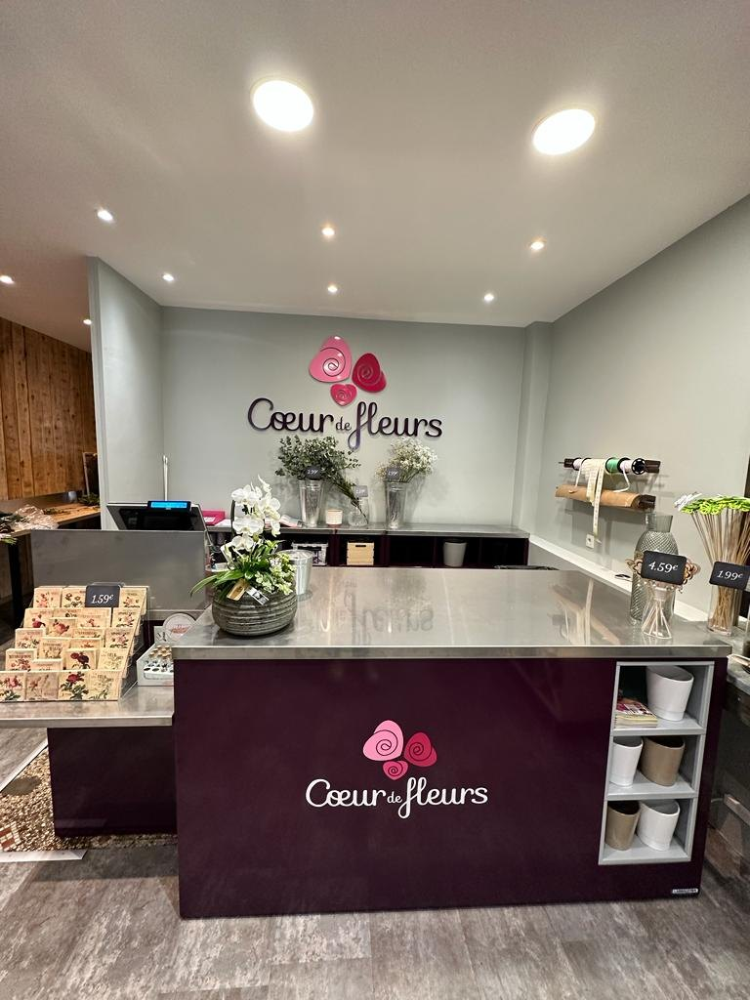

01Le quotidien en fleurs
Bouquets & compositions
Des créations florales pour offrir un message, marquer une attention ou simplement apporter une touche de couleur à la journée.
Appeler pour en parler →Fleuriste à Saint-Rambert-d'Albon
Bouquets, compositions et créations florales pensées pour offrir, célébrer et simplement faire plaisir.


La boutiqueÀ chaque envie sa création
Une attention à offrir, une table à fleurir ou une journée à célébrer : découvrez les univers floraux de la boutique.

01Le quotidien en fleurs
Des créations florales pour offrir un message, marquer une attention ou simplement apporter une touche de couleur à la journée.
Appeler pour en parler →Les grands jours
Les avis de la boutique témoignent de réalisations pour des mariages : bouquets, centres de table et décoration florale pour accompagner ces moments particuliers.
Lire les expériences mariage →
03À garder plus longtemps
Pour changer des fleurs coupées, la boutique met aussi en avant des plantes et présente régulièrement des terrariums, faciles à offrir comme à adopter chez soi.
Demander les disponibilités →Une fleur suffit parfois.
Le bon bouquet raconte le reste.
Oh Les Fleurs!
La boutique vous accueille au 4 avenue du Docteur Lucien Steinberg, avec une sélection de fleurs, bouquets et plantes à découvrir sur place.
Besoin d’une composition précise ou d’échanger autour d’un événement ? Le plus simple est d’appeler directement la boutique.

Dans la boutique
Faites glisser sur mobile ou survolez les images pour explorer quelques instants capturés chez Oh Les Fleurs!.
Vos mots, leurs fleurs
Infos pratiques
4 Av. Dr Lucien Steinberg
26140 Saint-Rambert-d'Albon
Questions fréquentes
Un doute sur une création ou un besoin particulier ? Pour une réponse immédiate, appelez la boutique.
04 75 31 03 79 →Oh Les Fleurs! est ouverte du lundi au samedi de 09:00 à 19:00, et le dimanche de 09:00 à 12:30. Pour une date particulière ou un jour férié, un appel avant de vous déplacer permet de vérifier l’ouverture.
La boutique se situe au 4 avenue du Docteur Lucien Steinberg, 26140 Saint-Rambert-d'Albon. Le bouton « Itinéraire » ouvre directement le trajet dans Google Maps.
Oui, plusieurs avis clients font état de bouquets de mariage et de décoration florale, notamment des centres de table. Pour parler de votre besoin et de vos envies, contactez directement la boutique.
Les photos de la boutique montrent également des plantes, et Oh Les Fleurs! met régulièrement des terrariums en avant sur ses réseaux. Les disponibilités pouvant évoluer, le mieux est de demander ce qui est présent en boutique au moment de votre visite.
Appelez la boutique au 04 75 31 03 79 afin d’expliquer l’occasion et le type de composition recherché. Cela permet de vérifier directement ce qui peut être préparé selon les fleurs disponibles.
La fiche Google de Oh Les Fleurs! rassemble actuellement une note moyenne de 4,3/5 pour 20 avis. Un lien vers la fiche complète est disponible dans la section avis de cette page.
Une envie de fleurs ?
Un bouquet, un mariage, une attention particulière : appelez la boutique ou venez nous rencontrer à Saint-Rambert-d'Albon.